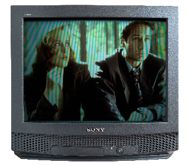

0:00/0:00
CerisePlayer # No songs detected.
Welcome
Through the many veins of the internet you have made it to the domain of DOLLFANTASTIK. Plug in and enjoy your time here.
This website is intented to be a place for me to upload and journal anything that I have created or find interesting.
It has been built with a 1920x1080 monitor in mind.
What's On?

The X-Files
Current Obsessions
- Cassettes
- 90s/00s Films
- Ethiopian Food
- 90s Blow Outs